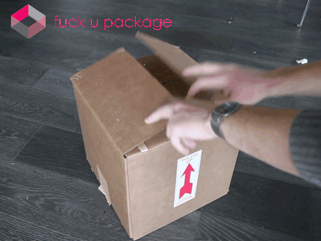

Ici, c'est l'enfer du JavaScript xénosensible: on a pas du tout envie d'utiliser Nginx ou Apache pour servir des pages web à nos visiteurs, et encore moins envie d'utiliser mille langages différents aux syntaxes exotiques.
Qu'est-ce que NodeJS
Il s'agit d'un framework en JavaScript. En gros, cela va vous permettre de créer des serveurs et des applications en n'utiliquant que du JavaScript.
L'avantage de Node est de n'utiliser qu'un seul langage unificateur pour tous les morceaux de votre projet, plutôt que de jongler entre différents langages tels que le PHP, le Java, le XML, etc...
Je vais tenter de vous montrer comment installer la dernière version de NodeJS sur votre machine et comment vous en servir à travers plusieurs chapitres faciles à comprendre.
Nous allons voir comment installer NodeJS et le mettre à jour à sa dernière version. Cela vous permettra d'utiliser le gestionnaire de package NPM pour installer des modules indispensables tels que express ou socket.io !
Au cours de ce chapitre, nous allons également installer NVM, qui vous permettra de changer à volonté de version de NodeJS.
Télécharger NodeJS
Pour commencer, pas de surprise: vous devez installer NodeJS sur votre machine, et donc le télécharger.
La méthode simple, rendez-vous sur le site officiel de Node. Sur cette page, vous avez une liste quasi-exhaustive de la plupart des systèmes d'exploitation. Choisissez le vôtre (moi c'est Windows 10 64bits) et lancez l'éxécutable, installez et bim. Vous aurez la toute dernière version de NodeJS ainsi que NPM.
L'installation directe par l'exécutable, le deb, etc... peut parfois poser problème. Je pense particulièrement aux utilisateurs de distributions Linux comme Debian, RHEL, etc... ou même aux utilisateurs qui préfèrent tout installer en lignes de commandes dans un terminal.
Installation en lignes de commandes (Linux)
Pour beaucoup, l'utilisation du terminal peut-être assez effrayante. La vérité qui se cache derrière suit une logique pourtant assez simple. Heureusement, je ne vous ferai pas un cours de lignes de commandes, je vais juste vous indiquer la méthode la plus simple pour installer Node tout en terminal.
Si vous êtes sur Windows, je vous recommande d'utiliser le PowerShell en tant qu'administrateur. Si ça ne vous convient pas, vous pouvez utiliser des imitations du bash Linux pour Windows telles que Babun.
Nous avons besoin de télécharger et installer le paquet Node, commencez donc par ouvrir votre terminal. Entrez la commande suivante:
sudo apt-get install -y nodejs
Vous avez donc maintenant NodeJS.
Attention, il se peut que NodeJS soit déjà installé dans votre distribution Linux, auquel cas vous aurez une erreur. Lancez juste la commande suivante pour vous assurer que l'installation c'est bien passée :
node -v
Si je ne m'abuse, le terminal devrait vous dire que vous vous trouvez en version 4 ou quelque-chose en dessous de 6, ce qui nous embête pas mal car elle ne comprend ni gestionnaire de paquets, ni gestionnaire de version. C'est pourquoi nous allons devoir installer NVM tout de suite !
Télécharger NVM
Comme vous l'aurez sans doute compris, NVM, pour Node Version Manager, va vous permettre de gérer votre version de NodeJS. Seulement, le problème est qu'il n'est pas présent de base avec Node, nous allons donc l'installer !
Une fois de plus, nous allons devoir taper une commande sur notre terminal :
Après quoi, NVM devrait être installé. Pour vérifier cela, balancez cette commande dans le terminal :
nvm --version
Mettre à jour NodeJS avec NVM
Vous pouvez désormais installer la version actuelle de NodeJS à l'aide de NVM avec la petite ligne de terminal suivante:
nvm install 9
Quand c'est fait, le terminal devrait vous indiquer un message comme Now using node v9.2.0 (npm v5.5.1). Si c'est en effet le cas, félicitations, vous venez de finir ce chapitre avec succès !
Ensuite
Bon bon bon !
Vous disposez maintenant de NodeJS sur votre machine. Vous avez NVM pour gérer sa version et vous pouvez désormais utiliser NPM, qui est totalement indispensable si vous désirez développer vos propres applications en Node.
Ne perdons donc pas une seconde et rendons-nous bien vite au chapitre sur NPM
Utiliser NPM
Ce chapitre va vous expliquer brièvement à quoi sert NPM et ce que sont les modules/packages que l'on peut installer dans un projet à l'aide de cet outil.
NPM (on l'a beaucoup lu en à peine 15 secondes, c'est chaud) signifie Node Package Manager.

Ce petit outil, néanmoins très complet, va nous permettre d'installer des modules (contenu dans les package) dans NodeJS ou plus spécifiquement dans nos projets.
Pourquoi s'en servir
Les modules vont vous permettre de créer des applications rapidement, sans devoir réinventer systématiquement la roue. Ils sont incontournables dans 99,99% des projets en NodeJS de nos jours.
Même le serveur HTTP de ce site est fait en node et utilise plusieurs modules tels que express ou ejs.
Initialiser un projet
Quand on initialise un projet avec NPM, celui ci créer un fichier package.json. Ce fichier contient non seulement le nom et la version du projet mais aussi, tout les modules utilisés par le projet.
Cela vous servira à lister tout les modules dont vous avez besoin. Ce qui vous permettera de tous les réinstaller pas la suite en cas de besoin.
Pour commencer, faites cd pour vous rendre dans un dossier où vous voulez créer votre projet.
Comme pour NVM, NPM s'utilise en lignes de commandes via le terminal. Pour initialiser un projet , faites donc la commande suivante :
npm init
NPM vous demandera le nom et la version du projet.Les modules que vous installerez y seront ajouté à la liste au moment ou vous les installerez. Par défaut, vous pouvez faire suivant à l'aveugle car vous pourrez configurer le tout plus tard.
Installation globale ou locale
NPM s'utilise de deux manières. Vous pouvez soit installer un module globalement dans NodeJS, ce qui vous permettra de l'utiliser dans tous vos projets, soit installer un module uniquement dans un projet en particulier, si jamais vous n'en avez pas besoin ailleurs.
Nous allons passer les deux méthodes en revue, vite fait, pour que vous compreniez un peu mieux de quoi il s'agit.
Globale
npm install -gnodemon
Dans l'exemple ci-dessus, nous avons -g qui va servir à indiquer au manager que l'on souhaite installer un package globalement. Dans cet exemple, le paquet en question est nodemon, il permet de relancer automatiquement un .js lorsqu'on le modifie. Ce paquet s'installer sans devoir trouver les dépendances vous-même, sans devoir écrire tous les fichiers de base qui font fonctionner ce genre d'applications. Vous gagnerez alors des heures de préparation.
Dans cette méthode, l'avantage est de pouvoir utiliser le module nodemon où l'on veut.
À l'opposé, nous avons la méthode d'installation locale, sans -g :
Locale
npm install express
Cette commande plus courte permet d'installer, en l'occurence, express dans un projet existant.
Notez que cette méthode installera le module uniquement dans le projet de votre choix. Il convient bien entendu que votre terminal soit dans le bon répertoire sinon ça ne sert à rien.
Mettre un paquet à jour
npm update -gnodemon
Cette commande de terminal va mettre à jour, dans cet exemple, le paquet nodemon. Si l'on ne met rien, le gestionnaire va mettre à jour tous les paquets.
Utilisez -g pour choisir de mettre à jour tous vos paquets. Enlevez-le si vous voulez juste mettre à jour ceux du projet.
Dans tous les cas, NPM va trouver en ligne, dans une vaste base de donnée, tous les modules déjà créés auparavant par la communauté de NodeJS. Notez donc que sans connexion à Internet, vous ne pourrez pas faire fonctionner NPM correctement.
C'est une question pertinente. C'est une bonne question... une excellente question...
Comme très souvent dans la vie de développeur, je vais devoir vous répondre "ça dépend". Ça dépend de votre projet, de vos besoins, des fonctionnalités que vous allez vouloir développer ou utiliser.
Avant de pouvoir commencer à utiliser les modules, il est très important de comprendre totalement ce qu'ils sont. Rendez-vous tout de suite sur le Chapitre sur les modules
Les modules
Et voilà, encore un nouveau terme insensé et une nouvelle chose à apprendre… pas vraiment en fait .
Par définition, un module est un fichier contenant plusieurs codes (variables, fonctions, objets, classes etc.) pouvant être appelés dans un autre fichier. Pensez un peu à vos links css ou vos scripts JS sur vos fichiers html, est bien c’est presque pareil ! Mais attention, je dis presque... Comment cela fonctionne ?
Tout d’abord, il nous faut créer une page "app.js" sur laquelle écrire votre code
varsayHelloInEnglish = function() {
return"HELLO";
}
Une fois cela fait, il faut expliquer à l’ordinateur que nous voulons exporter cet élément pour l’utiliser sur une autre page JS, que nous allons appeler ici " use.js "
L'export
Ici, rien de plus simple, à la fin de votre code, ajoutez :
module.exports.[nom désiré] = "noms de variable/fonction/etc";
Dans cet exemple, nous aurons ceci :
varsayHelloInEnglish = function() {
return "HELLO";
}
module.exports.English= sayHelloInEnglish;
Require
Maintenant que le module est exporté, il faut l’importer dans use.js. pour ce faire, il suffit d’utiliser la méthode " require " dans le fichier use.js qui va aller chercher votre module et le rendre utilisable.
Voici son mode d’emploi, premièrement la méthode doit être appelée dans une variable afin de pouvoir l’utiliser :
varSomething= require();
Puis il faut indiquer la position du module à la méthode require, tout comme le href dans un link css :
varSomething= require("./app.js");
Et voilà, votre fonction est importée, maintenant pour l’utiliser il vous suffit de l’appeler sous le nom de votre require plus le nom que vous avez donné à votre export (dans notre cas le Something et le English).
Dans notre exemple :
varSomething= require("./app.js");
console.log(Something.English()); // va nous logger HELLO
Pourquoi devoir donner un nom à notre export ?
Très souvent dans des modules, il n’y a pas qu’un seul élément, il faut donc donner un nom à nos différents éléments pour pouvoir les utiliser, par exemple :
varsayHelloInEnglish= function() {
return "HELLO";
}
varsayHelloInSpanish= function() {
return "Hola";
}
module.exports.English= sayHelloInEnglish;
module.exports.Spanish= sayHelloInSpanish;
Nous avons maintenant deux fonctions dans un seul module, toutes les deux importables et utilisables sous un seul et même require.
varSomething= require("./app.js");
console.log(Something.English()); // va nous logger HELLO
console.log(Something.Spanish()); // va nous logger Hola
Ensuite
Et voilà. Pour plus d'info, n'hésitez pas à suivre le cours de net ninja, il est bien fait !
Maintenant que nous savons comment utiliser les outils de base, il convient d'apprendre à mettre une page en ligne avec NodeJS, rendez-vous sur le chapitre sur la création de serveur
Créer un serveur web avec Nodejs
Dans ce chapitre, nous allons apprendre à créer notre propre serveur web grâce à bibliothèque node, afin de communiquer du contenu à notre navigateur via les modules et méthodes que node nous propose.
Le module HTTP
Pour commencer nous aurons besoin de créer un fichier nommé "server.js" et d'y inclure le module "http", qui nous donnera les outils nécessaires, pour communiquer avec le navigateur via le protocole HTTP (Hyper Text Transfer Protocol):
var http = require("http");
La méthode createServer
Une fois le module "http" inclus dans notre fichier "server.js", nous aurons accès à la méthode "http.createServer()" qui comme son nom l'indique, nous permettra de créer notre serveur. Cette méthode va nous passer deux paramètres : les objets request et response:
var server = http.createServer(function(request, response) {
});
Les objets Request et Response
L'objet "request" va nous fournir des informations concernant la requête client tel que son url, les en-têtes HTTP,... Tandis que l'objet "response" servira à retourner des données comme du texte, du html, un fichier,...
Le but étant de communiquer du contenu à notre navigateur, ici seul l'objet "response" et quelques-unes de ces méthodes vont nous intéresser.
La première étape consistera à appeler la méthode "response.writeHead()" qui va définir le statut de notre requête http ainsi que le type de contenu que l'on souhaite retourner.
Ensuite "response.write()" va tout simplement, permettre de concevoir notre document html passé en arguement. Et enfin "response.end()" viendra signifier la fin de notre réponse.
La dernière méthode appelée dans notre fichier sera "server.listen()", qui va lier notre serveur au port de notre choix. Ici nous utilisons le port 8080 mais comme mentionné juste avant, libre à vous d'utiliser un autre port afin d'accéder à votre seveur web:
server.listen(8080);
Démarrer le serveur
Et voilà, Il ne nous reste plus qu'à démarrer notre serveur via le terminal grâce à ligne de commande ci-dessous et à admirer notre magnifique message "hello world" à l'adresse suivante: http://localhost:8080/
node server.js
Le code complet étant ceci :
var http = require("http");
var server = http.createServer(function(request, response) {
Maintenant que votre serveur fonctionne et peut servir du HTML, il est temps d'apprendre comment échanger des informations avec ! Nous allons donc voir les événements
Les Événements
Votre serveur tourne désormais sur le port que vous avez choisi dans listen().
Il est temps de se pencher sur les événements. Vous vous rappelez de addEventListener() en JavaScript ? Cette fonction sert à exécuter du script lorsqu'un événements déclencheur se produit.
En NodeJS, les événements fonctionnent un peu de la même manière, à la différence que les événements peuvent être créés, configurés et personnalisés selon vos besoin.
Voici les événements existant par défaut dans NodeJS :
var fs = require('fs');
var rs = fs.createReadStream('./fichier');
rs.on('open', function() {
console.log('Le fichier est maintenant ouvert!!!');
});
Regardons un peu de plus près ce bout de code...
En ligne 1 nous importons le module fs, et à la ligne 2, nous appelons la fonction createReadStream() de fs sur une nouvelle variable nommée rs.
À la ligne 3, nous utilisons rs comme un objet pour y exécuter on() avec en premier paramètre open. Ce on() va nous permettre d'exécuter un script, une fonction. En l'occurence, le console.log() de la ligne 4 va s'éxécuter (sur rs) lorsque './fichier' sera ouvert par l'utilisateur.
Créer ses propres événements
Nous venons de voir rapidement comment cela fonctionne. Maintenant, comme je vous l'ai dit, voyons comment nous pouvons créer nos propres événements pour pouvoir éxécuter toutes les tâches que l'on veut sur n'importe-quel événement.
Notez que pour cela, il vous faudra importer le module events pour que cela fonctionne. Si vous avez oublié comment on fait, voici la commande terminale adéquate, à n'effectuer que dans la racine de votre projet car non globale.
npm install events
Et ensuite, voici la syntaxe juste :
var events = require('events');
var eventEmitter = new events.EventEmitter();
// Creation de l'évenement
var myEvent = function() {
console.log('Vive le terminal');
}
// Application de l'événement à un cas
eventEmitter.on('terminal', myEvent);
// Lance l'évenement "aimeTerminal"
eventEmitter.emit('terminal');
Comme vous le voyez, en ligne 1 nous avons importé le module events dans notre script à l'aide d'un require(). À la ligne suivante, nous avons créé un objet eventEmitter qui permettra de faire fonctionner nos événements.
En ligne 4 nous créons une fonction myEvent() que l'on voudra déclencher sur événement.
À la ligne 8, nous lançons notre fonction lorsque l'objet eventEmitter reçoit le signal 'terminal'. L'objet écoute, ou attend, de recevoir ce signal. En deuxième paramètre de on(), nous indiquons la commande qui doit se déclencher, en l'occurence il s'agit de la fonction myEvent().
C'est à la ligne 10 que notre foncton s'éxécute. Ce n'est que si le emit('terminal') de la ligne 10 s'exécute que le on() que nous avons écrit en ligne 8 ne se lance.
L'intérêt de emit() est qu'il peut s'éxécuter quand vous le désirez: à l'appui d'une touche, sur un lien, sur un bouton, etc...
Ensuite
C'est tout ce qu'il y a à retenir sur les événements. À partir de juste ça, vous devrez chipoter un bon moment pour créer des applications de plus en plus complexe. Je vous invite même à faire un grand tour sur la documentation NodeJS pour approfondir vos connaissances sur le sujet. Ne vous précipitez pas.
Les websockets c'est chouette !! Pourquoi me direz-vous? Parce que vous pouvez communiquer en temps réel entre la page web et node. Plus besoin de rafrachir la page pour afficher les nouvelles informations.
La même page peut envoyer des informations sans passer par un formulaire et recevoir des infromations en direct et tout ça en javascript !
Du côté serveur, pour gerer les websocket avec nodeJS vous aurez besoin d'installer le module socket.io avec NPM.
Du côté client, Pour communiquer avec les websockets , vous aurez besoin d'inclure la version client de socket.io sur vos pages web :
Pour initaliser socket io , il ne suffit pas de creer un objet,il faut aussi lui dire d'utiliser le server que vous aurez creer plus haut.
var io = require('socket.io')(server);
Avant d'utiliser socket.io,il faut que le server soit lié sur un port.
server.listen(8080);
La première chose à faire avant de recevoir ou envoyer des donner , c'est d'attendre que la connexion websocket soit établit avec la page web. Pour cela,il faudra attendre que l'évènement connection soit enclenché.
io.on('connection', function(socket) {
});
Pour se connecter côté client :
var socket = io('http://localhost');
Messages pour communiquer socketio utiliser des evenements,on peut d'un coté écouter un événement et le l'autre envoyer des messages à ces événements. On peut creer autant de type d'évenement que l'on veut mais aussi décider de n'en écouter que certain d'entre eux.
Pour envoyer un evenement de type bienvenu au client par exemple (coté serveur):
socket.emit("bienvenue","Bonjour ceci est votre 1ere connection");
Et pour le recevoir côté client :
socket.on('bienvenue', function(data) {
alert("le serveur nous dit :"+data);
});
L'inverse est aussi possible ou le client envoye un message , et le server écoute.
Créer un chat avec socket.io
Vous ne vous y attendiez pas ! Voici un exercice ! :D
Le but de cet exercice sera de creer un chat instantané trés simple qui devra:
Prendre un pseudo et l'envoyer au server (pas de connexion ni mot de passe à gerer)(à gerer via socket.io aussi)
Dans la même page,afficher le chat
Envoyer et recevoir des message via socket.io
En bonus
Toute les variables que vous déclarer dans l'évenement de connection( coté server ) resterons spécifique à chaque utilisateur.
io.on('connection', function(socket) {
var uneDonnéeParUtilisateur;
});
Ensuite
Ce que vous venez d'apprendre durant ce chapitre fonctionne avec les événements. Lorsque vous aurez terminé votre chat en Node, découvrez nos exercices avec Express
Exercices avec express
Vu que j'ai beaucoup travaillé à intégrer le cours que nous avons rédigé à plusieurs, je vais me reposer et vous laisser réunir ce que l'on a vu précédemment dans deux exercices en express !
L'exercice c'est très important !
Exercice 1
Créer un petit projet avec une structure mvc en vous aidant d'express. Le site doit comprendre :
une page html avec un formulaire pour écrire le commentaire
une page html avec un formulaire pour écrire le commentaire
une page 404
Organisez votre projet pour qu'en manipulant l'url, on ne puisse arriver que sur les pages citées ci-dessus. (int: utilisez la methode "get" fournie par express)
Exercice 2
Reprendre la structure du projet précédent afin de créer un site permettant la pubication de commentaires.
utilisez la methode POST fournie par express
utiliser la page form afin de pouvoir récupérer les données envoyées par le formulaire dans un fichier json
utiliser la page commentaire pour récupérer et afficher les commentaires qui sont écrit dans le fichier json